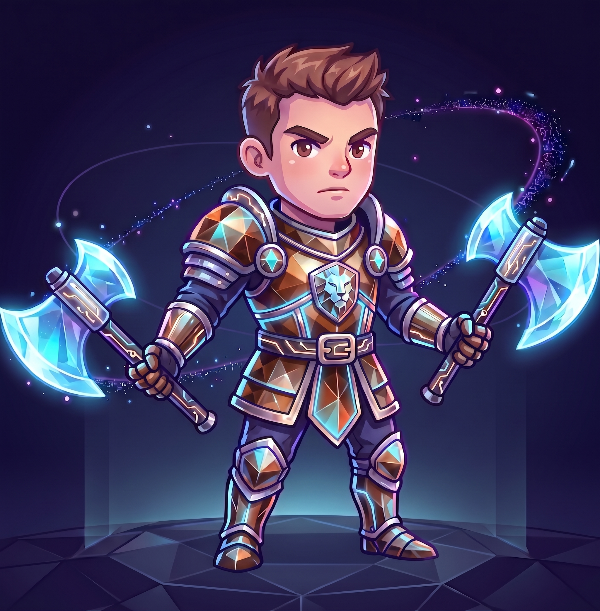

Contenido & empatía
Fernando Palearuzza
Conecta ideas y personas a través de historias claras y experiencias accesibles. Apasionado por la usabilidad y la creación de interfaces que realmente resuelvan problemas y mejoren la vida de los usuarios en cada interacción digital.
Habilidades Destacadas
Testing
Web
Diseño UI
HTML/CSS
* Pasa el cursor por las habilidades para interactuar.
Películas Favoritas
- El Padrino
- Gladiador
- Braveheart
Discos Favoritos
- Led Zeppelin IV
- The Wall
- A Night at the Opera